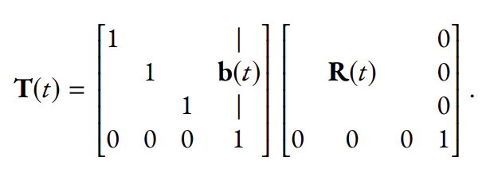
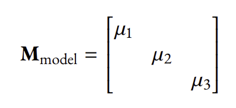
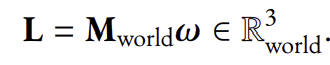
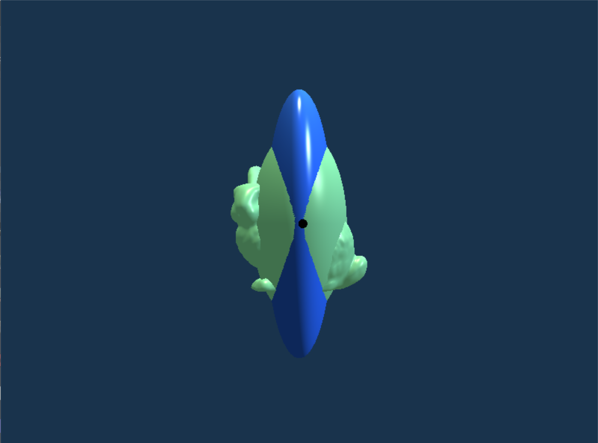

In this final project topic, we produce a physics-based animation. Specifically, we simulate rigid
body motion in 3D.
In terms of affine transformations we learned in the course, it is easy to describe what happens for a rigid body. As a standard description, there is a model coordinate where the vertex
position (and other attributes) of the geometric object are defined. Then,
there is a model matrix T ∈ R4x4, that sends the positions in the model
coordinate to the positions in the world coordinate:
For a rigid body motion, it is T that changes over time, constituting an animation of object moving in the world. The vertex positions defined under the model coordinate remain static; they are stored in some vertex buers initially and never require any update. Moreover, for arigid body, the time-dependent model matrix always takes the form of “first a rotation about the center of mass, followed by a translation”:
A fundamental assumption of rigid body motion is that the moment of inertia depends only on the shape of the geometry, which is completely static when we are in the model coordinate. In short: Mmodel is time-independent. A common practice is to set the model coordinate to align with the eigenvectors of Mmodel so that we can simply assume the Mmodel would be:
The angular momentum of the system is given by the following vector in the world coordinate:
In a rigid body motion, we have conservation of energy and conservation of angular momentum. More precisely,
